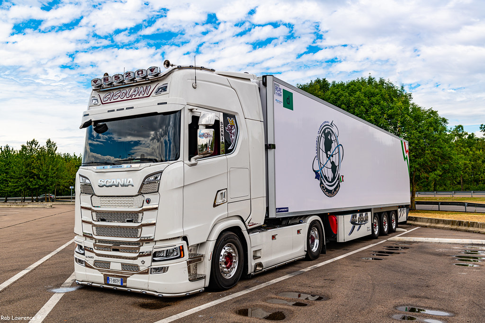

Artigo Discussão Ler Editar Ver histórico
Ferramentas Origem: Wikipédia, a enciclopédia livre. Ver também: Traton
Esta página cita fontes, mas que não cobrem todo o conteúdo. Ajude a inserir referências. Conteúdo não verificável pode ser removido.—Encontre fontes: ABW • Google (N • L • A) (Junho de 2020) Scania AB
Tipo Subsidiária Slogan "Sempre na direção do futuro" Atividade Indústria automobilística Fundação 1911 (112 anos) Sede Södertälje, Södermanland, Suécia Área(s) servida(s) Mundo (exceto América do Norte e países selecionados)[1] Pessoas-chave Annette Danielski (Presidente) Christian Levin (Presidente e CEO)
Empregados c. 54 000 (2021)[1] Produtos Caminhões, Ônibus, Motores a diesel Empresa-mãe Traton Ativos Aumento 257.83 bilhões kr (2021)[1] Lucro Aumento 7.18 bilhões kr (2021)[1] LAJIR Aumento 11.29 bilhões kr (2021)[1] Faturamento Aumento 146.15 bilhões kr (2021)[1] Antecessora(s) 1891 (132 anos) como Maskinfabriks AB Scania Website oficial www.scania.com Notas de rodapé / referências [1][2]
Scania AB é uma empresa sueca fabricante de Caminhões, Ônibus, e Motores a Diesel (marítimos e estacionários)
sediada em Södertälje, Suécia. Com mais de 54.000 funcionários, a Scania possui operações na Europa, América Latina, Ásia, África e Oceania.[a] Sua atuação estende-se por mais de 100 países no mundo.[1]A empresa foi fundada em 1891 como Maskinfabriks AB Scania na cidade de Malmö no sul da Suécia. Scania é a forma latina para designar a província sueca de Skåne. Em 1911 a Scania se associou a outro fabricante do ramo automobilístico, a Vagnsfabriks Aktiebolaget i Södertälje (VABIS) de Södertälje para formar a AB Scania-Vabis. Em 1969 a Scania-Vabis se associou com a Saab, para formar o grupo Saab-Scania AB. Em 1995 a união foi desfeita e a Scania passou a se chamar apenas Scania AB.
Em 2011, o Grupo Volkswagen compra a Scania pelo valor de 6,7 bilhões de euros
. Tomada do controle pelo Grupo Volkswagen Em 3 de março de 2008, o Grupo Volkswagen anunciou a compra de participação acionária adicional na Scania que elevou os seus direitos de voto para 68,60%, passando desta forma a ser o acionista controlador da empresa.[3]
Novo Scania R500 Linha de produtos A Scania produz caminhões, chassis para ônibus e motores diesel para uso industrial, marítimo, e para veículos, máquinas agrícolas e para construção civil produzidos por outras empresas.
A Scania tradicionalmente é um fabricante de caminhões pesados e extra pesados, embora produza modelos de menor tonelagem.
Até 1957, quando foi produzido o primeiro caminhão no Brasil, os veículos eram produzidos somente na Suécia. Atualmente existem fábricas também na Argentina, México, França, Holanda, Polônia e Rússia.
Esse caminhão foi adquirido por Ladair Michelon, que se tornaria um dos maiores empresários do Brasil. Em 2018 completou 80 anos e até hoje é reverenciado como referência no Transporte Rodoviário de Cargas
No Brasil nos anos 70 e 80 eram fabricados somente chassis para ônibus e cavalos mecânicos, com capacidade de tração a partir de 40 toneladas, atualmente também são fabricados caminhões rígidos 4x2, 6x2 e 6x4, atendendo também o segmento de caminhões semi-pesados.
Após 2004, nomenclatura em função da potência Em 2004 a Scania deixou de usar na nomenclatura dos seus veículos a cilindrada e a série. Atualmente existem quatro séries de caminhões, nomeadas em função do tipo de cabine e da potência do motor onde: uma letra indica o tipo de cabine: T - cabine atrás do motor "bicudo" não é mais oferecida. P - Cabine avançada, montada sobre o motor, baixa. Apresenta o cofre do motor elevado no interior da cabine, influenciando negativamente na movimentação no interior da cabine. Indicada para operações de curta distância, sendo mais fácil o acesso do motorista à cabine, quando comparada à Série R. Ex.: P230, P340. R - Cabine avançada alta, indicada para viagens longas. Apresenta melhor conforto interno em virtude da menor altura do cofre do motor. Ex.: R420, R500, R620. G - Cabine parecida com a serie R, mas com acabamento menos sofisticado. A linha de ônibus é composta pelas séries F (motor dianteiro) e K (motor traseiro). Em 2005, a Scania mudou a forma de nomenclatura de seus modelos de ônibus. Agora, o número representa a potência do motor em cavalo vapor (Exemplo: K420 - Motor com 420 Cavalos Vapor e K indica a posição do motor no chassi). Em 2009, a Scania lançou a sua 5ª geração de chassis. A nomenclatura dos modelos permaneceu a mesma, mas a Série 5 ganhou um novo painel e algumas melhorias no motor. Ainda este ano, a Scania voltou a produzir chassis com motor dianteiro, mercado que ela tinha deixado em 2003, com o lançamento do F230 4x2, somente na configuração 4x2, e do F270 nas configurações 4x2 e 6x2. Os modelos com motor traseiro são o K250 4x2, K270 4x2, K270 6x2 (com terceiro eixo direcional), K280 6x2*4, K310 6x2 (articulado ou com terceiro eixo direcional), K310 8x2 (articulado com dois eixos no carro traseiro, de 20 metros, exclusivo para Curitiba), K310 4x2, K360 (4x2 ou 6x2), K400 6x2 e K440 8x2. Os modelos com motor dianteiro são o F250 e F310 (Urbano e Rodoviário) e o F360HA (articulado).
Alguns exemplos:
"R"480 V8 (cabine não-reestilizada); "R"500 V8 (cabine reestilizada); "R"580 V8 (versão especial com motor importado da Suécia, montado no Brasil com a antiga cabine da Série 5). 1968-2005, nomenclatura em função da cilindrada Entre 1968 e 2005, foram produzidos os modelos das séries 0, 1, 2, 3 e 4, os quais foram nomeados com base na cilindrada do motor, em litros, e da série, formando um número com dois ou três dígitos. O uso de letras antes do número foi usado, secundariamente, para indicar o tipo de cabine e depois do número a aplicação do veículo.